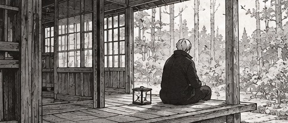
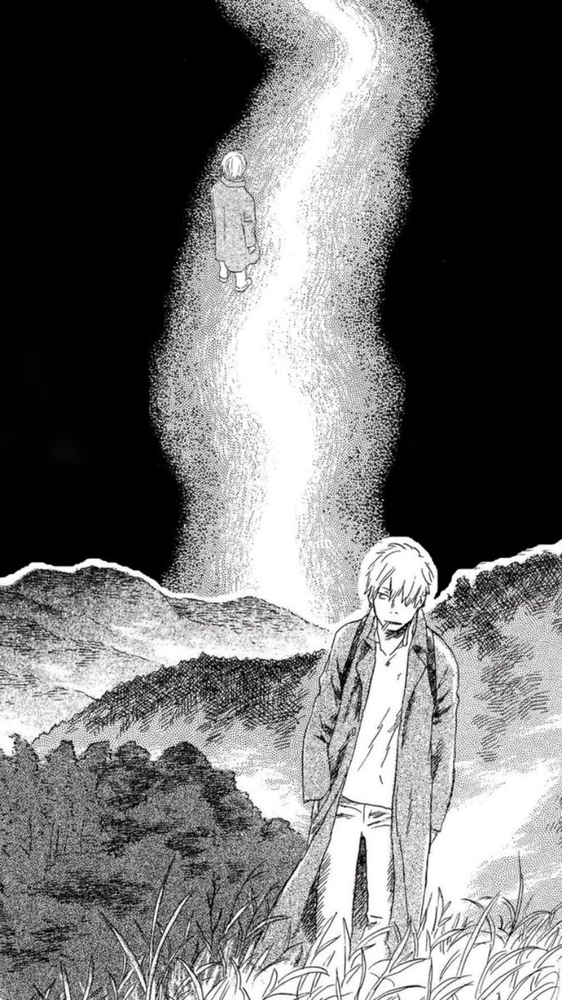

Somewhere between certainty and doubt.
A personal archive of things, ideas, places, observations and everything in between.
DISCLAIMER: All views expressed are personal interpretations, not definitive conclusions.


This is an archive of everything. Everything is a rather ambitious term for what is essentially a collection of my experiences and impressions. It includes what I have encountered, how I have interpreted it, and what has stayed with me. But how much of an experience actually stays with us? How much do we unknowingly alter, misplace or overlook? Perhaps what I call everything is merely what I have managed to retain, with countless other things existing beyond my awareness.
Entries may move between film, anime, television, books, music, technology, travel, philosophy, observations, opinions and whatever else seems worth documenting. Categories and tags are simply ways to navigate the archive, not boundaries. Each entry has one primary category for practical organisation, while tags can describe its other connections.
What appears here is provisional. I question my premises, distrust easy generalisations and remain unsure whether the mind can fully account for the reality it attempts to understand.
- Loading archive history…
AUTHOR ACCESS
Owner-only publishing. Token remains in this page's memory and is not saved in browser storage.